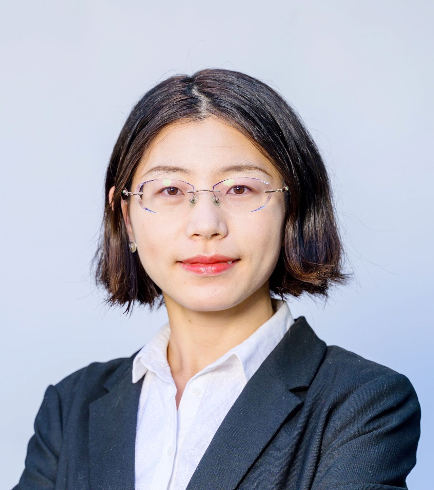
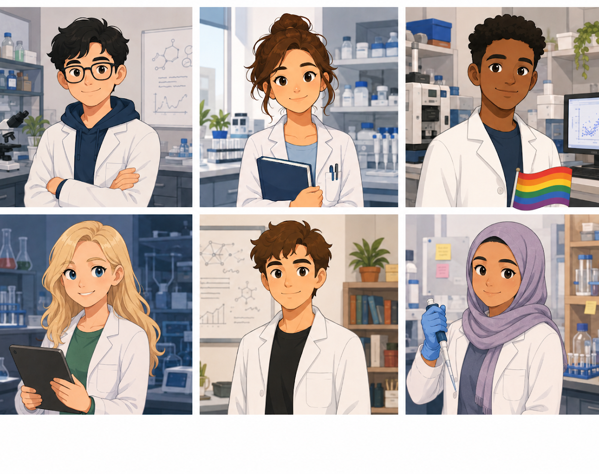

Yuyan Jiang, PhD
Incoming Assistant Professor (Sep 2026)
Human Biology Division, Fred Hutchinson Cancer Center
Radiation Oncology Division, Fred Hutchinson Cancer Center
Department of Radiation Oncology, University of Washington School of Medicine
Instructor, Stanford University School of Medicine 2026
Postdoc, Stanford University School of Medicine, 2025
PhD, Nanyang Technological University, Singapore, 2020
BEng, Sun Yat-sen University, China, 2016
Phone: 650-283-8810
Email: yyjiang@stanford.edu
Google Scholar, LinkedIn, Stanford Profile

Could This Be You?
We're hiring at all levels!